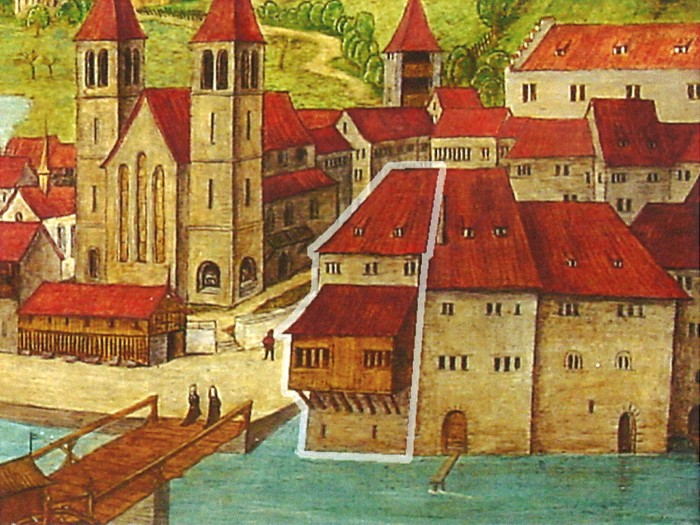

Waldmanns Einküfte
Was gibt es hier zu sehen?
Das heutige Zunfthaus der Meisenzunft steht am Standort des damaligen Einsiedler Amtshauses, der Vertretung des Klosters Einsiedeln in Zürich.
Das Einsiedler Amtshaus auf den Altartafeln von Hans Leu d. Ä. (um 1500).
Ämter, Geschäfte, Dienste und Pensionen
Wie Waldmann aus nichtadeligen, aber durchaus soliden[1] Verhältnissen zum reichsten Mann der Eidgenossenschaft[2] wurde:
Die Heirat mit der Witwe Anna Landolt/Edlibach eröffnete Waldmann nicht nur den politischen sondern auch den finanziellen Aufstieg. Er wurde Verwalter der weltlichen Belange des Klosters Einsiedeln in Zürich und er betrieb einen Eisenhandel. Tätgkeiten die er vom verstorbenen Ulrich Edlibach übernehmen konnte.[3]
Gleichzeitig war Waldmann spätestens nach den Burgunderkriegen eine bekannte Persönlichkeit in der Eidgenossenschaft. Er wurde zu einem der wichtigsten Gesandten an fremde Höfe. Er wurde ein Diplomat. Die Niederlage Burgunds hatte den Streit zwischen Frankreich und Österreich heraufbeschworen, der noch Jahrhunderte andauerte. Zwischen den beiden Mächten stand die Eidgenossenschaft. Waldmann war als Vermittler überall anzutreffen und er nahm von allen Geld. Er verhandelte mit den Herzögen von Mailand, den Herzögen von Lothringen, mit den unterschiedlichen Parteien innerhalb der Herrschaft Österreich – mit Maximilian und mit Sigismund –, auch mit Mathias Corvinus dem Ungarnkönig, der 1485 Wien einnahm, mit den bayrischen Wittelsbachern, mit der Herrin von Savoyen und nicht zuletzt auch mit dem Papst.[4]
Anmerkungen
- [↑] Vgl. Amiet: Nachrichten (1886), S. 4, 6f. u. 15f.
- [↑]Vonrufs: politische Führungsgruppe (2002), S. 210.
- [↑]Zur Geschäftsführung als Einsiedler Amtmann vgl. Amiet: Nachrichten (1886), S. 21f.
- [↑]Vogelsanger: Versuch (1989), S. 86; Vonrufs: politische Führungsgruppe (2002), S. 210–214; Gagliardi: Dokumente I (1911), S. XI; Zur Gesandtschaft nach Frankreich vgl. Jucker: Innen- oder Aussenpolitik, S. 252–258.